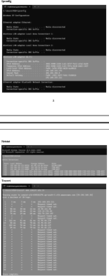
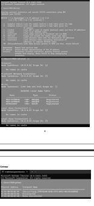

To familiarize with windows network commands and their outputs.
o Define and Assign Values – Assign logical, numeric, integer, complex, and character values to
variables.
o Check Data Types – Use functions to verify the data type of each variable.
o Execute the Program – Run the R script in RStudio or any R environment.
oVerify Output – Observe and confirm the correct data types are displayed.
SI.NO COMMAND USE
1) Ipconfig This command can be utilized to verify a network
connection as well as verify your network settings.
2) Netstat Displays active a TCP connections, ports on which the
computer is listening, Ethernet statistics, the IP routing
"ContentToDisplay": "3.IMPLEMENTATION OF DATA STRUCTURES IN R",
table etc…
3) Tracert The tracert command is used to visually see a network
packet being sent and received and the amount of hops
required for that packet to get to its destination.
4) Ping Helps in determining TCP/IP networks ip address as well
as determine issues with the network and assists in
resolving them.
5) Pathping Provides information about network latency and network
loss at intermediate hops between a source and destination
pathping sends.
6) Nslookup Displays information that you can use to diagnose Domain
Name System (DNS) infrastructure.
7) Nbtstat MS_DOS utility that displays protocol statistics & current
TCP/IP connections using NBT.
8) Getmac DOS command used to show both local & remote MAC
addresses when run with no parameters (i.egetmac) it
displays MAC addresses for the local system. When run
with the /s parameter (Eg. Getmac /s \\too> it displays
MAC address for the remote computer).
output

